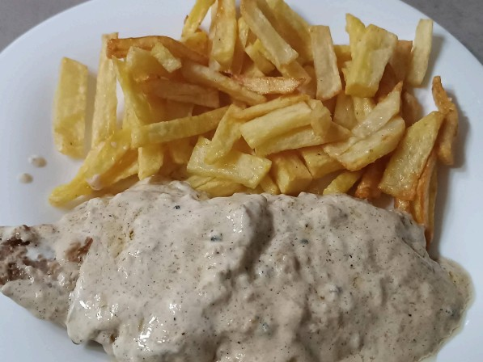

Ternera a la Pimienta Verde

Ingredientes para dos personas
- 4 o 5 filetes de ternera
- 2 brics de nata líquida para cocinar (200ml cada uno)
- Pimienta verde en grano (al gusto)
- Aceite de oliva, sal y un poco de harina
Preparación
1. Salamos los filetes, los enharinamos y los freímos vuelta y vuelta con un poco de aceite.
2. En la misma sartén, añadimos dos o tres cucharaditas de pimienta verde junto con la nata.
3. Dejamos que espese a fuego lento ("chup-chup") y servimos con patatas.
⬅ Volver al inicio